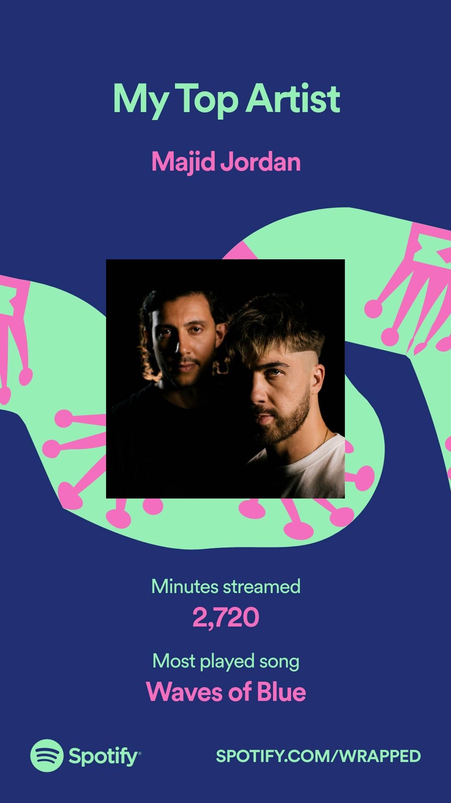

Carla's Top 10
-
Looking for the moon 🌛.

-
Favorite color: 🍓Red 🍒
-
Memes live in my head rent free.

-
Favorite song: 🌊Waves of Blue by Majid Jordan

- User-centered design
- Understanding humans and their behaviors

- Traveling and exploring cities. 🐒
- Visiting museums and cultural institutions.
- Spending time with family 👩🧔🏻👩🏻👩🏻👩🏻
- Favorite ✨ Arabic Bops ✨ playlist